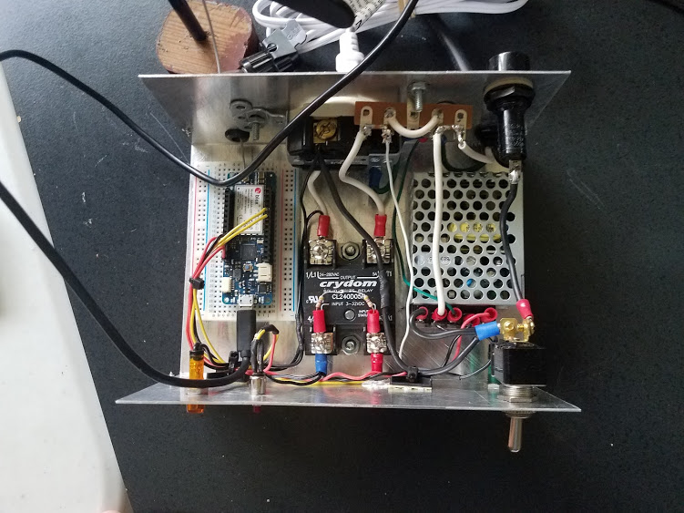
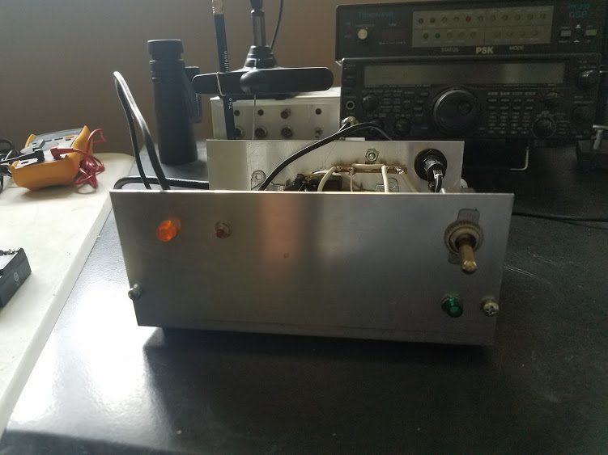
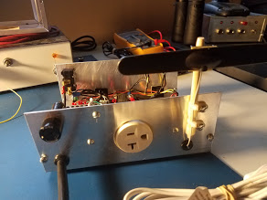

The Mic Switch has two inputs, a desk microphone and a terminal node controller (TNC). It has one output that connects to the microphone input of a radio. A pushbutton toggles the input to the radio from either the desk microphone or the TNC. The code is hosted in the github repository. The Link is below.
  